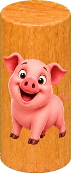

421
Le duel du zinc : charge, décharge, et gare à la nénette. 2-4 joueurs.


10 000
Banquez ou craquez : premier à dix mille points. 2-4 joueurs.

Yams
La feuille mythique : 13 cases, 3 lancers, un bonus à 63. 1-4 joueurs.


Poker d'as
Full, carré, quinte : la meilleure main prend la manche. 2-4 joueurs.


Zanzibar
4·5·6 bat tout — et le perdant ramasse les jetons. 2-4 joueurs.


Mexico
Trois vies, un 21 imbattable, dernier survivant. 2-4 joueurs.

Chicago
Onze manches, de 2 à 12 : visez juste. 2-4 joueurs.

Cochon
Relancez tant que vous osez… mais gare au 1 ! 2-4 joueurs.


Passe-dix
Passe ou manque ? Annoncez, puis lancez. 2-4 joueurs.


Boston
Trois jets, on garde le plus fort à chaque fois. 2-4 joueurs.


La Boîte
Shut the Box : abaissez les neuf tuiles. 1-4 joueurs.


Martinetti
La course de 1 à 12, dans l'ordre et sans faiblir. 2-4 joueurs.

Le Cochon troué
Lancez le dé, posez vos cochons, un 6 les fait sortir ! Stop ou encore. 2-6 joueurs. 🐷